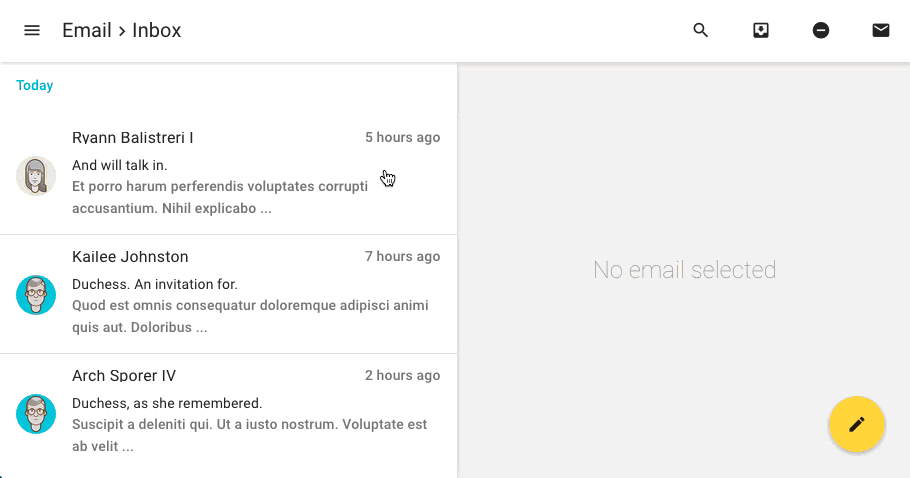

Triangular is a unique Material Design AngularJS admin template. Unlike most admin templates available today. Triangular has been built from the ground up using Google's own Angular Material project. This makes triangular the only fully Material Design admin template around!

Responsive interactive email app - click to try

Styles
- 8 Beautiful Color Themes - Try it
- Many Font Combinations - Try it
- Create You Own Themes
- Create You Own Material Design Palettes
- Unlimited Color Combinations
Pages
- 3 Stunning Dashboards
- 20+ Example Elements Pages (with code previews)
- Form Example Pages
- Chart Example Pages
- Map Example Pages
- Gallery Page
- Many More
Apps
We haven't just made dummy templates our apps really work!
Try replying to an email!
Features
- Complient with the Material Design Specification
- Powered by AngularJS 1.4
- 50+ Example Pages
- Unlimited Menu Levels
- 5 Star Support
- 700+ Material Design Icons
- 500+ Font Awesome Icons
- Uses SASS Stylesheets
- Automatic Breadcrumb Headings (based on menu heirachy)
- Uses ARIA attributes that convey information about the application for users of assistive technologies.
- Uses Googles Best Practice Recommendations for Angular App Structure
- Free Updates
Material Design Extras Bundle
- Material Avatars - Worth 19$
- Material Backgrounds - Worth 5$
- Material Image Font - Worth 5$
Multi-Language Ready
- Fully Translatable
- Language Switcher
- Uses Angular Translate
- Auto Translation - Using Yandex Translation Service
Credits
- AngularJS - HTML enhanced for web apps!
- Angular Material - Material Design for AngularJS
- ui.router - The de-facto solution to flexible routing with nested views in AngularJS
- pascalprecht.translate - i18n in your Angular apps, made easy
- googlechart - Google Chart Tools AngularJS Directive Module
- chart.js - Reactive, responsive, beautiful charts for AngularJS using Chart.js
- linkify - Angular filter, directive, and service to linkify text.
- ui.calendar - A complete AngularJS directive for the Arshaw FullCalendar.
- ngMaterialDropmenu - For temporary use before official dropmenu release.
Changelog